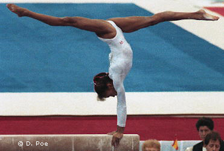

Betty Okino (USA)
1991 American Cup Champion
1992 World UB Silver Medalist

Betty was born on June 4, 1975, in Uganda. Her father is Ugandan and her mother is Romanian. Betty began gymnastics at age 9 in Chicago (IL Gymnastics Institute) and in 1990 she moved to Texas to train with Bela and Marta Karolyi. She had a lot of success in 1991 -- winning the American Cup and placing 3rd on beam at the World Championships -- but leg and back injuries in 1992 prevented her from competing at the US Championships or US Olympic Trials that year. Still, Okino was named to the Olympic team where she helped the team win a bronze medal. Today, Okino is an actress, appearing in both movies and television.
Competition Results
1988
Capital Cup: 3rd AA
Jr. US Championships: 17th AA
Jr. US Classic "A": 9th AA
1989
Capital Cup: 4th AA
Intl. Junior Invitational: 2nd AA
Jr. American Classic: 3rd AA
US Olympic Festival/Jr. US Championships: 20th AA
1990
Blume Memorial: 5th AA
DTB Cup: 2nd AA, 1st UB, 2nd B, 3rd FX
Gander Memorial: 2nd AA
Goodwill Games: 2nd Team, 4th AA, 4th UB, 6th B, 6th FX
Peachtree Classic: 1st AA
US Championships: 2nd AA, 1st B
USA-USSR Dual Meet: 2nd Team, 8th AA
1991
Alamo Invitational: 2nd AA
American Cup: 1st AA
Buckeye Classic: 3rd AA
Intl. Mixed Pairs: 4th AA
World Championships: 2nd Team, 4th AA, 3rd B
1992
Olympic Games: 3rd Team, 12th AA, 6th B
World Championships: 2nd UB, 8th B
1993
Subaru World Open: 2nd AA
This page was created on September
16, 2005.
© Gymn Forum